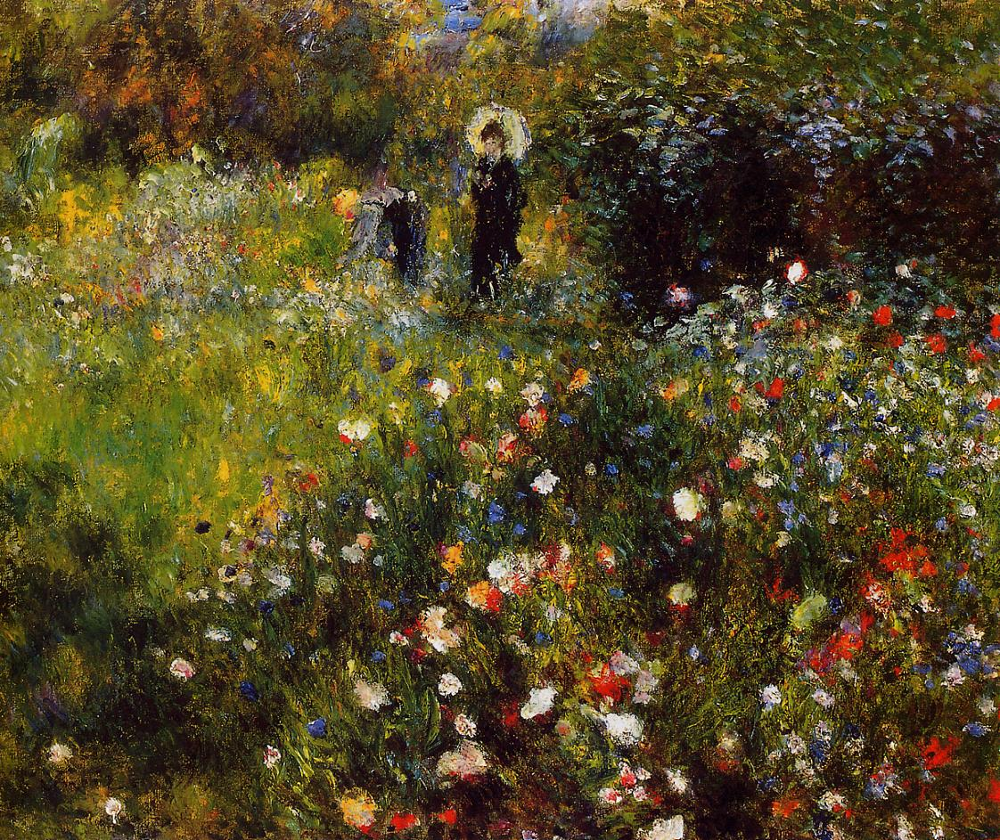
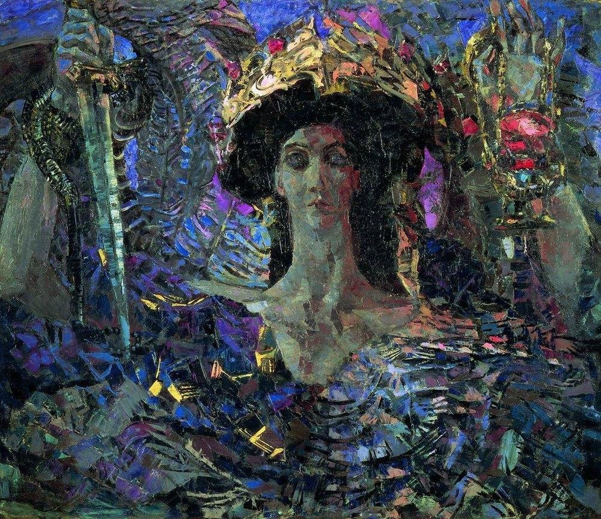
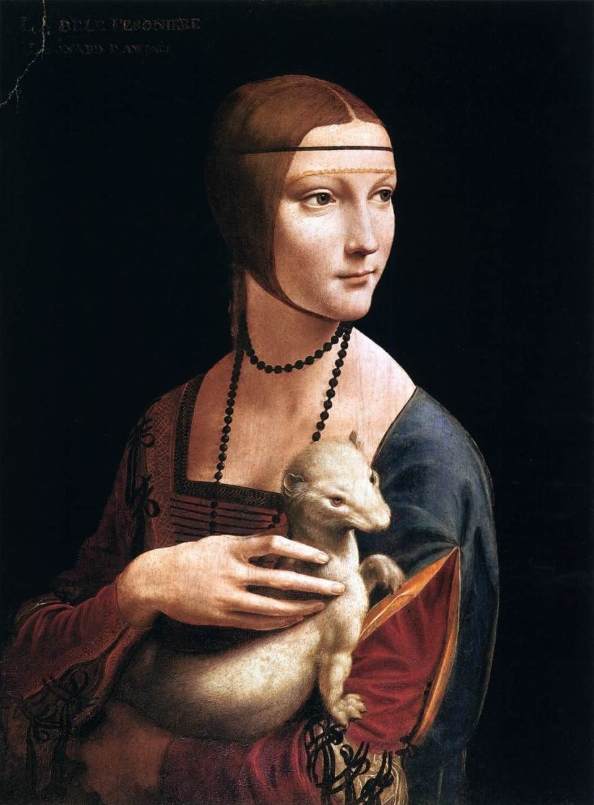
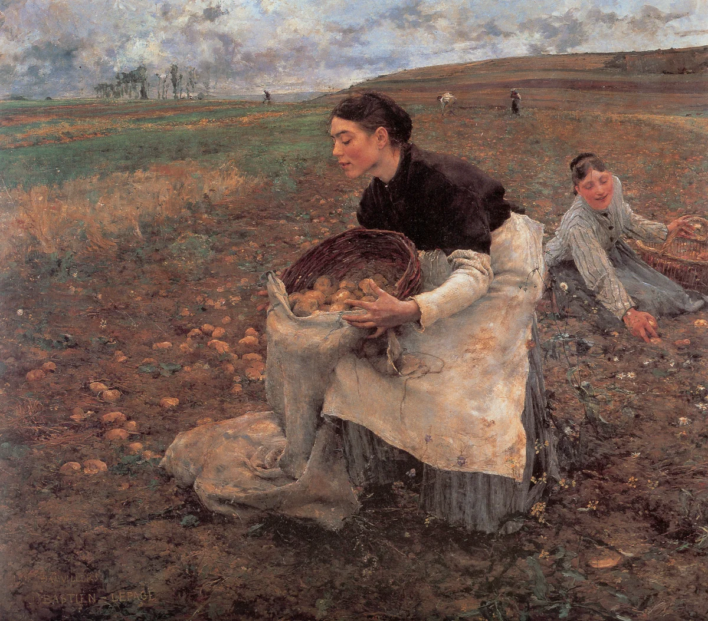
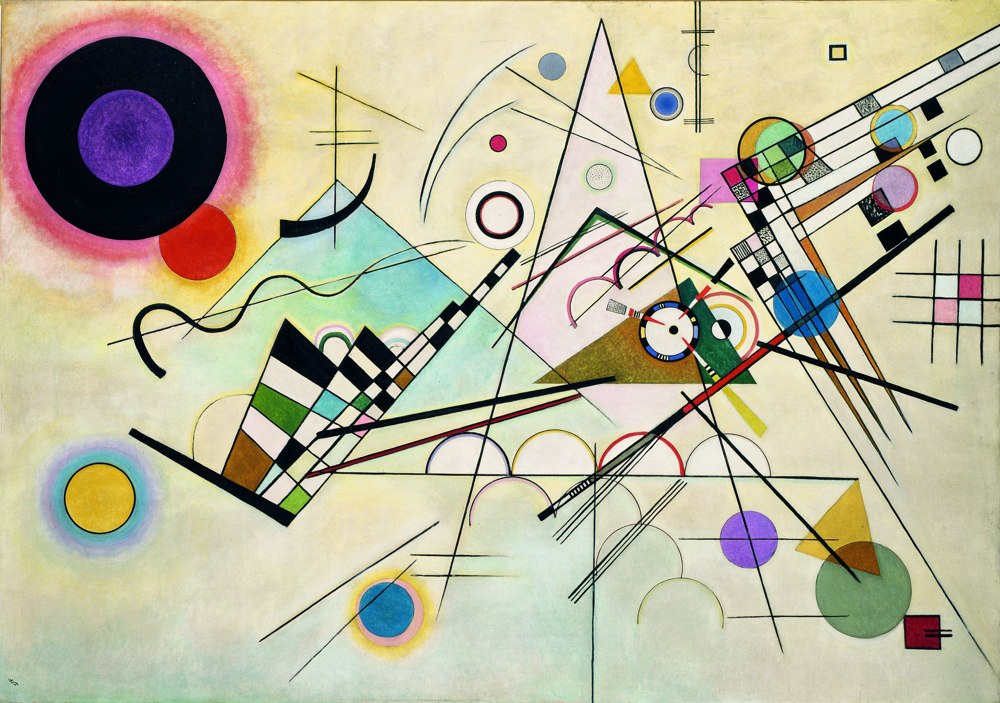
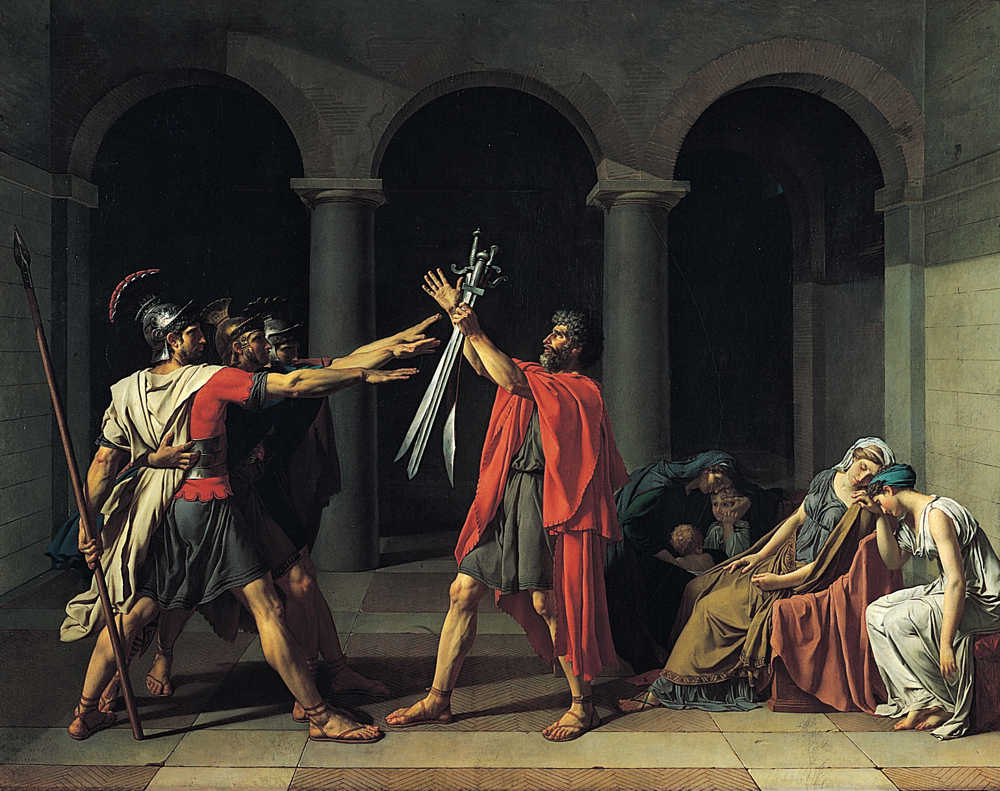

Импрессиони́зм — одно из крупнейших течений в искусстве последней трети XIX — начала XX веков, зародившееся во Франции и затем распространившееся по всему миру.
Представители импрессионизма стремились разрабатывать методы и приёмы, которые позволяли наиболее естественно и живо запечатлеть реальный мир в его подвижности и изменчивости,
передать свои мимолётные впечатления. 
Художники отказались от чёрного цвета.
Мастера пытались на своих полотнах передать своё мимолётное восприятие природы. Представителями данного стиля являются:
Эдуард Мане, Клод Моне, Эдгар Дега, Альфред Сислей.
Обычно под термином «импрессионизм» подразумевается направление в живописи (но это, прежде всего, группа методов), хотя его идеи также нашли своё воплощение в литературе и музыке,
где импрессионизм также выступал в определённом наборе методов и приёмов создания литературных и музыкальных произведений, в которых авторы стремились передать жизнь в чувственной,
непосредственной форме, как отражение своих впечатлений. Из родственных течений декаданса ближе всего к импрессионизму находится символизм.
Многие художники, начиная работать в стиле символизма (и во вполне академической манере письма), затем переходили на стилистическую платформу импрессионизма.
Модерни́зм — общность направлений искусства конца XIX — начала XX века, признаком которых можно считать разрыв с предшествующей художественной традицией,
стремление к новому, условность стиля и непрерывное обновление художественных форм. Модернизм был основным направлением в западноевропейской культуре ХХ века,
проявив себя в различных видах искусств.

Во второй половине XX века он был скорректирован, подвергнут последовательной критике и вытеснен другими художественными концепциями.
В частности — идеологией и философией постмодернизма.
Важно обратить внимание на различие двух терминов — «модернизм» и «модерн», близких по звучанию в русском языке.
«Модерн» обозначает художественный стиль конца XIX — начала XX века (ар нуво, югендстиль, сецессион и др.),
затронувший прежде всего архитектуру и декоративно-прикладное искусство, он связан с использованием асимметричных изогнутых линий
и стилизованных растительных форм.
«Модернизм» — широкое направление в культуре ХХ века, связанное с абстрактными и авангардными течениями,
ориентированное на преодоление устоявшейся художественной традиции и построенное на последовательном стремлении к новизне.

Ранняя итальянская живопись эпохи Возрождения является вершиной мирового художественного наследия.
Проторенессанс в живописи связан со средневековьем, с романскими, готическими, византийскими традициями,
этот период явился подготовкой Возрождения. Он делится на два подпериода: до смерти Джотто ди Бондоне
и после (1337 год). Период Раннего Возрождения охватывает собой время с 1420 по 1500 год.
Период Высокого Возрождения простирается примерно с 1500 по 1527 год и Маньеризм — с 1525 по 1600 год. Эти даты являются
приблизительными, потому что жизнь и творчество отдельных художников наложилось на разные упомянутые периоды.
Художники Италии эпохи Возрождения, хотя и были преданы конкретным городам, тем не менее перемещались по всей Италии,
часто имея дипломатический статус и занимаясь распространением художественных и философских идей.
Город Флоренция в Тоскане известен как родина Ренессанса, и в частности живописи Возрождения.
Прото-Ренессанс начинается с профессиональной деятельности живописца Джотто и включает в себя творчество художников Таддео Гадди,
Орканьи и Altichiero. Раннее Возрождение было отмечено работами художников Мазаччо, Фра Анджелико, Паоло Уччелло, Пьеро Делла Франческа и Верроккьо.
В период Высокого Возрождения работали Леонардо да Винчи, Микеланджело, Рафаэль и Тициан. Маньеризм отмечен творчеством Андреа дель Сарто, Понтормо и Тинторетто.
Реали́зм — эстетическая позиция, согласно которой задача искусства состоит в как можно более точной и объективной фиксации действительности.
В сфере художественной деятельности значение реализма очень сложно и противоречиво. Его границы изменчивы и неопределённы;
стилистически он многогранен и многовариантен.

Различные грани реализма в живописи представляют собой барочный иллюзионизм Караваджо, Вермеера и Веласкеса, импрессионизм Мане и Дега, нюненские работы Ван Гога,
прецизионизм Эдварда Хоппера.
Под реализмом в узком смысле понимают позитивизм как направление в изобразительном искусстве 2-й половины XIX века.
Термин «реализм» впервые употребил французский литературный критик Ж. Шанфлёри в 50-х годах XIX века для обозначения искусства, противостоящего романтизму и академизму.
Рождение реализма в живописи чаще всего связывают с творчеством французского художника Гюстава Курбе (1819—1877),
открывшего в 1855 году в Париже свою персональную выставку «Павильон реализма», хотя ещё до него в реалистической манере
работали художники барбизонской школы (Теодор Руссо, Жан-Франсуа Милле, Жюль Бретон).
В 1870-е годы реализм разделился на два основных направления — натурализм и импрессионизм.
Абстракциони́зм (лат. abstractio «удаление, отвлечение») ненарративное искусство или в английской терминологии Abstract Art — искусство, отказавшееся от нарратива.
Абстрактное искусство проявлено не только в живописи и скульптуре, но и во всех остальных видах искусства, в первую очередь в музыке.
Абстрактный язык в искусстве появился в самые древних времена, о чём свидетельствуют абстрактные орнаменты
на поверхностях древнейших артефактов. До сих пор дискуссионным остаётся вопрос, что появилось раньше, абстрактное или реалистическое искусство.

Эта викистатья посвящена преимущественно абстрактной живописи, появившейся начале 20-го века,
когда идея рисовать абстрактные формы овладела сознанием живописцев, то есть сознанием людей, которые рисуют преимущественно масляными красками на полотне.
Для творчества абстракционистов характерен универсализм, абстрактное искусство представляется как универсальная модель миропорядка.
Работая с первичными элементами живописного языка, художники обращаются к общим и фундаментальным композиционным принципам.
Классици́зм (фр. classicisme от лат. classicus «образцовый») — художественный стиль и эстетическое направление в европейской культуре XVII—XIX вв.
В основе классицизма лежат идеи античности, нашедшие яркое выражение в философии Декарта. Художественное произведение, с точки зрения классицизма,
должно строиться на основании строгих канонов, тем самым обнаруживая стройность и логичность самого мироздания. Интерес для
классицизма представляет только вечное, неизменное — в каждом явлении он стремится
распознать только существенные, типологические черты, отбрасывая случайные индивидуальные признаки.

Эстетика классицизма придаёт огромное значение общественно-воспитательной функции искусства. Классицизм устанавливает строгую иерархию жанров,
которые делятся на высокие (ода, трагедия, эпопея) и низкие (комедия, сатира, басня). Каждый жанр имеет строго определённые признаки, смешивание которых не допускается.
Как определенное направление сформировался во Франции в XVII веке. Французский классицизм утверждал личность человека как высшую
ценность бытия, освобождая его от религиозно-церковного влияния. Об особенностях классицизма в Российской империи см. статью русский классицизм.
Во многом классицизм опирался на античное искусство(Аристотель, Гораций), взяв его за идеальный эстетический образец, «золотой век».
Во Франции XVII века он назывался временем Минервы и Марса.